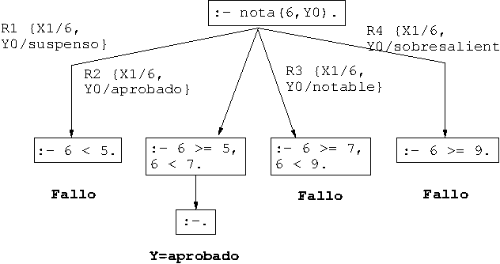
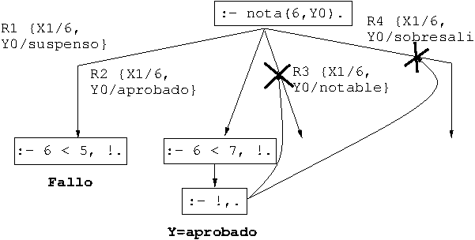
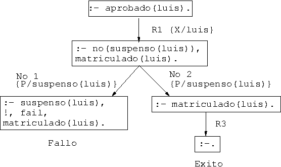
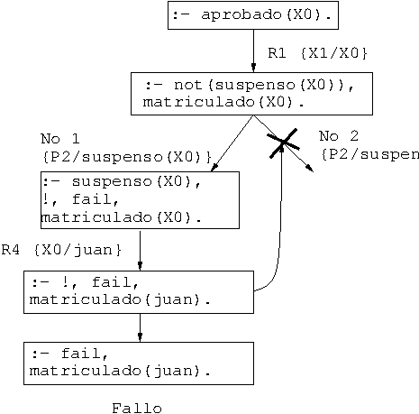
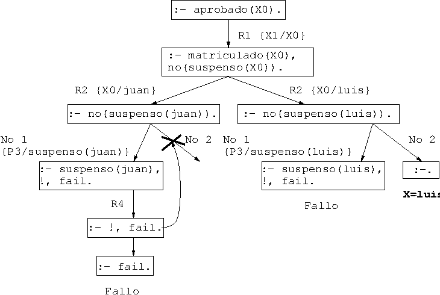
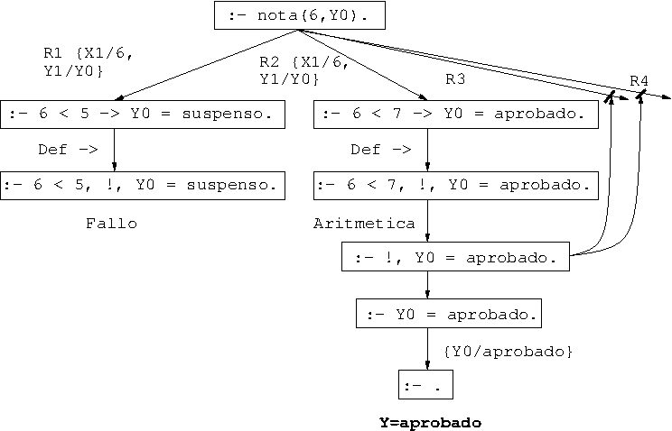

Tema 4: Retroceso, corte y negación
Índice
1. Control mediante corte
1.1. Ejemplo de nota sin corte:
nota(X,Y)se verifica siYes la calificación correspondiente a la notaX; es decir,YessuspensosiXes menor que5,YesaprobadosiXes mayor o igual que5pero menor que7,YesnotablesiXes mayor que7pero menor que9eYes sobresaliente siXes mayor que9.Definición notas_1.pl
nota(X,suspenso) :- X < 5. nota(X,aprobado) :- X >= 5, X < 7. nota(X,notable) :- X >= 7, X < 9. nota(X,sobresaliente) :- X >= 9.
Ejemplo: ¿cuál es la calificación correspondiente a un
6?:?- nota(6,Y). Y = aprobado ; false.
- Árbol de deducción de
?- nota(6,Y).

1.2. Ejemplo de nota con cortes
Definición (notas_2.pl).
nota(X,suspenso) :- X < 5, !. nota(X,aprobado) :- X < 7, !. nota(X,notable) :- X < 9, !. nota(X,sobresaliente).
¿Cuál es la calificación correspondiente a un
6?:?- nota(6,X). X = aprobado.
- Árbol de deducción de
?- nota(6,Y).
 Ejemplo: ¿Es
6sobresaliente?:?- nota(6,sobresaliente). true.
1.3. Uso de corte para respuesta única
Diferencia entre
memberymemberchk?- member(X,[a,b,a,c]), X = a. X = a ; X = a ; false. ?- memberchk(X,[a,b,a,c]), X = a. X = a.
Definición de
memberymemberchk:member(X,[X|_]). member(X,[_|L]) :- member(X,L). memberchk(X,[X|_]) :- !. memberchk(X,[_|L]) :- memberchk(X,L).
2. Negación como fallo
2.1. Definición de la negación como fallo
Definición de la negación como fallo (
not):no(P) :- P, !, fail. % false. 1 no(_). % false. 2
Programa con negación (aprobados_1.pl).
aprobado(X) :- no(suspenso(X)), matriculado(X). % R1 matriculado(juan). % R2 matriculado(luis). % R3 suspenso(juan). % R4
Consultas:
?- aprobado(luis). true. ?- aprobado(X). false.
- Árbol de deducción de
?- aprobado(luis).:
 - Árbol de deducción de
?- aprobado(X).
 - Modificación del orden de los literales
Programa (aprobados_2.pl)
aprobado(X) :- matriculado(X), no(suspenso(X)). % R1 matriculado(juan). % R2 matriculado(luis). % R3 suspenso(juan). % R4
Consulta:
?- aprobado(X). X = luis.
- Árbol de deducción de
?- aprobado(X).

2.2. Ejemplo de uso de la negación y el corte
borra(L1,X,L2)se verifica siL2es la lista obtenida eliminando los elementos deL1unificables simultáneamente conX; por ejemplo,?- borra([a,b,a,c],a,L). L = [b, c] ; false. ?- borra([a,Y,a,c],a,L). Y = a L = [c] ; false. ?- borra([a,Y,a,c],X,L). Y = X, X = a, L = [c] ; false.
Definición con
not(borra.pl).borra_1([],_,[]). borra_1([X|L1],Y,L2) :- X=Y, borra_1(L1,Y,L2). borra_1([X|L1],Y,[X|L2]) :- not(X=Y), borra_1(L1,Y,L2).
Definición con corte (borra.pl).
borra_2([],_,[]). borra_2([X|L1],Y,L2) :- X=Y, !, borra_2(L1,Y,L2). borra_2([X|L1],Y,[X|L2]) :- % not(X=Y), borra_2(L1,Y,L2).
Definición con corte y simplificada (borra.pl).
borra_3([],_,[]). borra_3([X|L1],X,L2) :- !, borra_3(L1,X,L2). borra_3([X|L1],Y,[X|L2]) :- % not(X=Y), borra_3(L1,Y,L2).
3. El condicional
Definición de
notacon el condicional (notas_3.pl).nota(X,Y) :- X < 5 -> Y = suspenso ; % R1 X < 7 -> Y = aprobado ; % R2 X < 9 -> Y = notable ; % R3 true -> Y = sobresaliente. % R4
Definición del condicional y verdad:
P -> Q :- P, !, Q. % Def. -> 1 true. % Def. true
¿Cuál es la calificación correspondiente a un
6?:?- nota(6,X). X = aprobado.
- Árbol de deducción correspondiente a la pregunta
?- nota(6,Y).
 Ejemplo: ¿Es
6sobresaliente?:?- nota(6,sobresaliente). true.
4. Bibliografía
4.1. Bibliografía
- J.A. Alonso
Introducción a la programación lógica con Prolog.
- Cap. 7: "Control mediante corte"
- Cap. 8: "Negación
- I. Bratko
Prolog programming for artificial intelligence (3 ed.)
(Addison–Wesley, 2001)
- Cap. 5: "Controlling backtracking"
- W.F. Clocksin y C.S. Mellish
Programming in Prolog.
(Springer Verlag, 1994)
- Cap. 4: "Backtracking and the cut"
- L. Sterling y E. Shapiro
The art of Prolog (2nd Edition).
(The MIT Press, 1994)
- Cap. 11: "Cuts and negation"